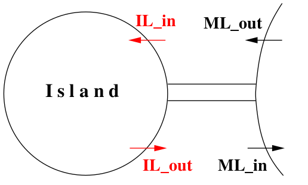
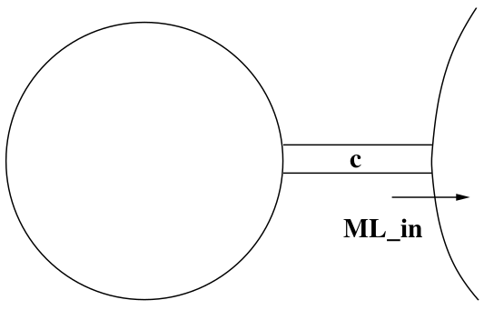

Atelier/tuto Event-B/Rodin
Introduction à la méthode Event-B
et ses différents outils
TAPAS-ANR meeting
Laboratoire Méthodes Formelles - LMF, Paris-Saclay, 19 November 2025
Laboratoire Méthodes Formelles - LMF, Paris-Saclay, 19 November 2025

The Rodin Platform
-
The Rodin platform (an Eclipse-based IDE)
is intended to support the construction and verification of Event-B models.- provides effective support for refinement and mathematical proof.
- plugins for éditing models, generating proof obligations, proving, animating, medel-cheking, code generating ...
-
Rodin Platform and Plug-in Installation:
- Requires Java JRE (version 17 or later) $\to$ www.oracle.com/fr/java/.
- Download the Core $\to$ sourceforge.net/projects/rodin-b-sharp/.

Rodin on Macs
Procedure to run the Intel version of Rodin
on macs with Apple Silicon processors:
- download this JDK (it's a Java 17 runtime for Intel)
-
install it by double-clicking it; the Java runtime is installed in
/Library/Java/JavaVirtualMachines/temurin-17.jre -
find the downloaded
Rodin.app and modify the fileRodin.app/Contents/Eclipse/rodin.ini -
add the next two lines just before the one with
-vmargs
-
add the next two lines just before the one with
-
as with all other Rodin releases for mac, one also needs to execute
The Rodin Platform
-
Required plugins for this tutorial :
-
the Atelier B Provers plugin from the Atelier B Provers Update site.
https://www.atelierb.eu/update_site/atelierb_provers -
the ProB plugin from the ProB Update site.
https://stups.hhu-hosting.de/rodin/prob1/release/ -
the Theory plugin from the Rodin Plug-ins (archive) Update site.
https://rodin-b-sharp.sourceforge.net/updates-archive
menu :
The Event-B method

- The Event-B method is an evolution of the classical
B method.
- modeling a system by a set of events instead of operations.
- The Event-B method is a formal method based on
first-order logic and set theory. - The Event-B method is based on :
- the notions of pre-conditions and post-conditions (Hoare),
- the weakest pre-condition (Dijkstra),
- and the calculus of substitution (Abrial).
- The Event-B method is adapted to analyse discrete systems.
- offers the possibility of modelling discrete behaviors.
The Event-B method
The State of a Model
- A discrete model is first made of a state
- The state is represented by some constants and variables
- Constants are linked by some properties
- Variables are linked by some invariants
- Properties and invariants are written using set-theoretic expressions
The Event-B method
The Events of a Model (Transitions)
- A discrete model is also made of a number of events
- An event is made of a guard and an action
- The guard denotes the enabling condition of the event
- The action denotes the way the state is modified by the event
- Guards and actions are written using set-theoretic expressions
The Event-B method
A Model Schematic View
CONTEXT $ctx_1$
EXTENDS $ctx_2$
SETS $s$
CONSTANTS $c$
AXIOMS
$A(s,c)$
THEOREMS
$T(s,c)$
END
MACHINE $mch_1$
REFINES $mch_2$
SEES $ctx_i$
VARIABLES $v$
INVARIANTS
$I(s,c,v)$
THEOREMS
$T(s,c,v)$
EVENTS
$[events\_list]$
END
$event$ $\mathrel{\widehat=}$
any $x$
where
$G(s,c,v,x)$
then
$BA(s,c,v,x,v')$
end
The Event-B method
Operational Interpretation
Initialize;
while (some events have true guards) {
Choose one such event;
Modify the state accordingly
}
- An event execution is supposed to take no time
- Thus, no two events can occur simultaneously
- When all events have false guards, the discrete system stops
- When some events have true guards, one of them is chosen non-deterministically and its action modifies the state
- The previous phase is repeated (if possible)
The Event-B method
Comments on the Operational Interpretation
- Stopping is not necessary: a discrete system may run for ever
- This interpretation is just given here for informal understanding
- The meaning of such a discrete system will be given by the
proofs which can be performed on it
Building Large Computerized Systems
Refinement
- Refinement allows us to build model gradually
- We shall build an ordered sequence of more precise models
- Each model is a refinement of the one preceding it
- A useful analogy: looking through a microscope
- Spatial as well as temporal extensions
- Data refinement
Purpose of this Lecture
- To present an example of system development
- Our approach $\to$ a series of more and more accurate models
- This approach is called refinement
- The models formalize the view of an external observer
- With each refinement observer “zooms in” to see more details
Purpose of this Lecture
- Each model will be analyzed and proved to be correct
- The aim is to obtain a system that will be correct by construction
- The correctness criteria are formulated as proof obligations
- Proofs will be performed by using the sequent calculus
- Inference rules used in the sequent calculus will be reviewed
The Event-B method
Models and proof obligations
CONTEXT $ctx_1$ EXTENDS $ctx_2$ SETS $s$ CONSTANTS $c$ AXIOMS $A(s,c)$ THEOREMS $T(s,c)$ END
MACHINE $mch_1$ REFINES $mch_2$ SEES $ctx_i$ VARIABLES $v$ INVARIANTS $I(s,c,v)$ THEOREMS $T(s,c,v)$ EVENTS $[events\_list]$ END
$event$ $\mathrel{\widehat=}$
any $x$
where
$G(s,c,v,x)$
then
$BA(s,c,v,x,v')$
end
$A(s,c) ~~~\vdash~~~ T(s,c) $
$A(s,c) \land I(s,c,v) ~~~\vdash~~~ T(s,c,v)$
$A(s,c) \land I(s,c,v) \land G(s,c,v,x) ~~~\vdash~~~ \exists v'.BA(s,c,v,x,v')$
$A(s,c) \land I(s,c,v) \land G(s,c,v,x) \land BA(s,c,v,x,v') ~~~\vdash~~~ I(s,c,v')$
$...$
$A(s,c) \land I(s,c,v) ~~~\vdash~~~ T(s,c,v)$
$A(s,c) \land I(s,c,v) \land G(s,c,v,x) ~~~\vdash~~~ \exists v'.BA(s,c,v,x,v')$
$A(s,c) \land I(s,c,v) \land G(s,c,v,x) \land BA(s,c,v,x,v') ~~~\vdash~~~ I(s,c,v')$
$...$
A Requirements Document
- The function of this system is to control cars on a narrow bridge.
- This bridge is supposed to link the mainland to a small island.
- FUN-1 $\to$ controlling cars on a bridge between the mainland and an island.
- FUN-2 $\to$ the number of cars on the bridge and the island is limited.
- FUN-3 $\to$ the bridge is one way or the other, not both at the same time.

Our Refinement Strategy
- Initial model $\to$ Limiting the number of cars (FUN-2)
- First refinement $\to$ Introducing the one way bridge (FUN-1, FUN-3)
Our Refinement Strategy
Initial model $\to$ Limiting the number of cars (FUN-2 )- It is very simple
- We do not even consider the bridge
- We are just interested in the pair “island-bridge”
- We are focusing FUN-2 $\to$ limited number of cars on island-bridge
- First refinement $\to$ Introducing the one way bridge (FUN-1, FUN-3)
A Situation as Seen from the Sky

Two Events that may be Observed

Formalizing the State
- STATIC PART of the state $\to$ constant
$d$ with axiomaxm0_1
CONSTANTS $d$ AXIOMS axm0_1: $d \in \mathbb N$
Formalizing the State
- DYNAMIC PART of the state $\to$ variable
$n$ with invariantsinv0_1 andinv0_2
VARIABLES $n$ INVARIANTS inv0_1: $n \in \mathbb N$ inv0_2: $n \leq d$
Event ML_out
- This is the first transition (or event) that can be observed
- A car is leaving the mainland and entering the Island-Bridge
- The number of cars in the Island-Bridge is incremented

Event ML_in
- We can also observe a second transition (or event)
- A car leaving the Island-Bridge and re-entering the mainland
- The number of cars in the Island-Bridge is decremented

Formalizing the two Events
(Approximation)
- An event is denoted by its name and its action (an assignment)
- Event
ML_out increments the number of cars
ML_out $\mathrel{\widehat=}$
then
act0_1: $n := n + 1$
end
ML_in $\mathrel{\widehat=}$
then
act0_1: $n := n - 1$
end
Why an Approximation?
- These events are approximations for two reasons:
- They might be insufficient at this stage because not consistent with the invariant
- They might be refined (made more precise) later
- We have to perform a proof in order to verify this consistency.
Invariants
- An invariant is a constraint on the allowed values of the variables
- An invariant must hold on all reachable states of a model
- To verify that this holds we must show that
- the invariant holds for initial states, and
- the invariant is preserved by all events
- We will formalize these two statements as proof obligations (POs)
- We need a rigorous proof showing that these POs indeed hold
Before-after Predicates
- To each event can be associated a before-after predicate
- It describes the relation between the values of the variable(s)
just before and just after the event occurrence - The before-value is denoted by the variable name, say
$n$ - The after-value is denoted by the primed variable name, say
$n'$
Before-after Predicates
Example
➠ The events
➠ The corresponding before-after predicates
ML_out $\mathrel{\widehat=}$
then
act0_1: $n := n + 1$
end
ML_in $\mathrel{\widehat=}$
then
act0_1: $n := n - 1$
end
➠ The corresponding before-after predicates
$$n' = n + 1$$
$$n' = n - 1$$
These representations are equivalent.
About the Shape
of the Before-after Predicates
- The before-after predicates we have shown are very simple
- The after-value
$n'$ is defined as a function of the before-value$n$ - This is because the corresponding events are deterministic
- We shall also consider some non-deterministic events $$n' \in \{n + 1, n + 2\}$$
$$n' = n + 1$$
$$n' = n - 1$$
Intuition
about Invariant Preservation
- Let us consider invariant
inv0_1 $$n \in \mathbb N$$ - And let us consider event
ML_out with before-after predicate $$n' = n + 1$$ - Preservation of
inv0_1 means that we have (just afterML_out ): $$n' \in \mathbb N ~~~~~~\text{that is}~~~~~~ n + 1 \in \mathbb N$$
Being more Precise
- Under hypothesis
$n \in \mathbb N$ the conclusion$n + 1 \in \mathbb N$ holds - This can be written as follows $$n \in \mathbb N ~~~\vdash~~~ n + 1 \in \mathbb N$$
- This type of statement is called a sequent
-
Sequent above $\to$ invariant preservation proof obligation for
inv0_1
Proof Obligation
Invariant Preservation
-
We are given an event with before-after predicate
$v' = E(c, v)$ -
The following sequent expresses preservation of invariant
$I_i(c, v)$ $$INV~:~A(c), I(c, v) ~~~\vdash~~~ I_i(c, E(c, v))$$ -
It says $\to$
$I_i(c, E(c, v))$ provable under hypotheses$A(c)$ and$I(c, v)$ - We have given the name $INV$ to this proof obligation
Vertical Layout
of Proof Obligations
- The proof obligation $$INV~:~A(c), I(c, v) ~~~\vdash~~~ I_i(c, E(c, v))$$
- can be re-written vertically as follows
$\text{Axioms}$
$\text{Invariants}$
$\vdash$
$\text{Modified Invariant}$
$A(c)$ $I(c, v)$ $\vdash$ $I_i(c, E(c, v))$
Back to our Example
➠ We have two events
➠ ... and two invariants
➠ Thus, we need to prove four proof obligations
ML_out $\mathrel{\widehat=}$
then
act0_1: $n := n + 1$
end
ML_in $\mathrel{\widehat=}$
then
act0_1: $n := n - 1$
end
➠ ... and two invariants
inv0_1: $n \in \mathbb N$
inv0_2: $n \leq d$
➠ Thus, we need to prove four proof obligations
Proof obligation
for ML_out and inv0_1
ML_out $\mathrel{\widehat=}$
then
act0_1: $n := n + 1$ // $n' = n + 1$
end
$\text{Axioms}$ axm0_1
$\text{Invariant}$ inv0_1
$\text{Invariant}$ inv0_2
$\vdash$
$\text{Modified Invariant}$ inv0_1
$d \in \mathbb N$ $n \in \mathbb N$ $n \leq d$ $\vdash$ $n + 1 \in \mathbb N$
This proof obligation is named ML_out/inv0_1/INV
Proof obligation
for ML_out and inv0_2
ML_out $\mathrel{\widehat=}$
then
act0_1: $n := n + 1$ // $n' = n + 1$
end
$\text{Axioms}$ axm0_1
$\text{Invariant}$ inv0_1
$\text{Invariant}$ inv0_2
$\vdash$
$\text{Modified Invariant}$ inv0_2
$d \in \mathbb N$ $n \in \mathbb N$ $n \leq d$ $\vdash$ $n + 1 \leq d$
This proof obligation is named ML_out/inv0_2/INV
Proof obligation for
ML_in and inv0_1
ML_in $\mathrel{\widehat=}$
then
act0_1: $n := n - 1$ // $n' = n - 1$
end
$\text{Axioms}$ axm0_1
$\text{Invariant}$ inv0_1
$\text{Invariant}$ inv0_2
$\vdash$
$\text{Modified Invariant}$ inv0_1
$d \in \mathbb N$ $n \in \mathbb N$ $n \leq d$ $\vdash$ $n - 1 \in \mathbb N$
This proof obligation is named ML_in/inv0_1/INV
Proof obligation
for ML_in and inv0_2
ML_in $\mathrel{\widehat=}$
then
act0_1: $n := n - 1$ // $n' = n - 1$
end
$\text{Axioms}$ axm0_1
$\text{Invariant}$ inv0_1
$\text{Invariant}$ inv0_2
$\vdash$
$\text{Modified Invariant}$ inv0_2
$d \in \mathbb N$ $n \in \mathbb N$ $n \leq d$ $\vdash$ $n - 1 \leq d$
This proof obligation is named: ML_in/inv0_2/INV
Summary
of Proof Obligations
ML_out/inv0_1/INV $d \in \mathbb N$ $n \in \mathbb N$ $n \leq d$ $\vdash$ $n + 1 \in \mathbb N$
ML_out/inv0_2/INV $d \in \mathbb N$ $n \in \mathbb N$ $n \leq d$ $\vdash$ $n + 1 \leq d$
ML_in/inv0_1/INV $d \in \mathbb N$ $n \in \mathbb N$ $n \leq d$ $\vdash$ $n - 1 \in \mathbb N$
ML_in/inv0_2/INV $d \in \mathbb N$ $n \in \mathbb N$ $n \leq d$ $\vdash$ $n - 1 \leq d$
Informal Proof
of ML_out/inv0_1/INV
$d \in \mathbb N$ $n \in \mathbb N$ $n \leq d$ $\vdash$ $n + 1 \in \mathbb N$
remove
hypotheses
$\Longrightarrow$
$n \in \mathbb N$ $\vdash$ $n + 1 \in \mathbb N$
obvious $\surd$
- In the first step, we remove some irrelevant hypotheses
- In the second and final step, we accept the sequent as it is
- We have implicitly applied inference rules
- For rigorous reasoning we will make these rules explicit
Inference Rules
Monotonicity of Hypotheses
- The rule that removes hypotheses can be stated as follows: $$ \frac{H ~~~ \vdash ~~~ G}{H, H' ~~~ \vdash ~~~ G} ~~~~~~ \textrm{MON}$$
- It expresses the monotonicity of the hypotheses
Some Arithmetic Inference Rules
The Second Peano Axiom
$$ \frac{ }{n \in \mathbb N ~~~ \vdash ~~~ n + 1 \in \mathbb N} ~~~~~~ \textrm{P2}$$
$$ \frac{ }{0 < n ~~~ \vdash ~~~ n - 1 \in \mathbb N} ~~~~~~ \textrm{P2'}$$
More Arithmetic Inference Rules
Axioms about ordering relations
on the integers
$$ \frac{ }{n < m ~~~ \vdash ~~~ n + 1 \leq m} ~~~~~~ \textrm{INC}$$
$$ \frac{ }{n \leq m ~~~ \vdash ~~~ n - 1 \leq m} ~~~~~~ \textrm{DEC}$$
All inference rules implemented in Rodin are available here
Proofs
- A proof is a tree of sequents with axioms at the leaves.
- The rules applied to the leaves are axioms.
- Each sequent is labeled with (name of) proof rule applied to it.
- The sequent at the root of the tree is called the root sequent.
- The purpose of a proof is to establish the truth of its root sequent.
A Formal Proof
of ML_out/inv0_1/INV
$d \in \mathbb N$ $n \in \mathbb N$ $n \leq d$ $\vdash$ $n + 1 \in \mathbb N$
MON
$\Longrightarrow$
$n \in \mathbb N$ $\vdash$ $n + 1 \in \mathbb N$
P2
$\surd$
Proof requires only application of two rules $\to$ MON and P2
A Failed Proof Attempt
ML_out/inv0_2/INV
$d \in \mathbb N$ $n \in \mathbb N$ $n \leq d$ $\vdash$ $n + 1 \leq d$
MON
$\Longrightarrow$
$n \leq d$ $\vdash$ $n + 1 \leq d$
?
- We put a ? to indicate that we have no rule to apply
- The proof fails $\to$ we cannot conclude with rule $\text{INC}$
(
$n < d$ needed) $$ \frac{ }{n < m ~~~ \vdash ~~~ n + 1 \leq m} ~~~~~~ \text{INC}$$
A Failed Proof Attempt
ML_in/inv0_1/INV
$d \in \mathbb N$ $n \in \mathbb N$ $n \leq d$ $\vdash$ $n - 1 \in \mathbb N$
MON
$\Longrightarrow$
$n \in \mathbb N$ $\vdash$ $n - 1 \in \mathbb N$
?
- The proof fails $\to$ we cannot conclude with rule $\text{P2'}$
(
$0 < n$ needed) $$ \frac{ }{0 < n ~~~ \vdash ~~~ n - 1 \in \mathbb N} ~~~~~~ \text{P2'}$$
A Formal Proof
of ML_in/inv0_2/INV
$d \in \mathbb N$ $n \in \mathbb N$ $n \leq d$ $\vdash$ $n - 1 \leq d$
MON
$\Longrightarrow$
$n \leq d$ $\vdash$ $n - 1 \leq d$
DEC
$\surd$
$$ \frac{ }{n \leq m ~~~ \vdash ~~~ n - 1 \leq m} ~~~~~~ \text{DEC}$$
Reasons for Proof Failure
- We needed hypothesis
$n < d$ to proveML_out/inv0_2/INV - We needed hypothesis
$0 < n$ to proveML_in/inv0_1/INV ML_out $\mathrel{\widehat=}$ then act0_1: $n := n + 1$ endML_in $\mathrel{\widehat=}$ then act0_1: $n := n - 1$ end - We are going to add
$n < d$ as a guard to eventML_out - We are going to add
$0 < n$ as a guard to eventML_in
Improving the Events
Introducing Guards
- We are adding guards to the events
- The guard is the necessary condition for an event to occur
ML_out $\mathrel{\widehat=}$
when
grd0_1: $n < d$
then
act0_1: $n := n + 1$
end
ML_in $\mathrel{\widehat=}$
when
grd0_1: $0 < n$
then
act0_1: $n := n - 1$
end
Proof Obligation
General Invariant Preservation
-
Given
$c$ with axioms$A(c)$ and$v$ with invariants$I(c, v)$ -
Given an event with guard
$G(c, v)$ and b-a predicate$v' = E(c, v)$ -
We modify the Invariant Preservation PO as follows:
$\text{Axioms}$ $\text{Invariants}$ $\text{Guard of the event}$ $\vdash$ $\text{Modified Invariant}$$A(c)$ $I(c, v)$ $G(c, v)$ $\vdash$ $I_i(c, E(c, v))$
A Formal Proof
of ML_out/inv0_1/INV
$d \in \mathbb N$
$n \in \mathbb N$
$n \leq d$
$n < d$
$\vdash$
$n + 1 \in \mathbb N$
MON
$\Longrightarrow$
$n \in \mathbb N$ $\vdash$ $n + 1 \in \mathbb N$
P2
$\surd$
Adding new assumptions to a sequent does not affect its provability
A Formal Proof
of ML_out/inv0_2/INV
$d \in \mathbb N$
$n \in \mathbb N$
$n \leq d$
$n < d$
$\vdash$
$n + 1 \leq d$
MON
$\Longrightarrow$
$n < d$ $\vdash$ $n + 1 \leq d$
INC
$\surd$
- Now we can conclude the proof using rule $\text{INC}$ $$ \frac{ }{n < m ~~~ \vdash ~~~ n + 1 \leq m} ~~~~~~ \text{INC}$$
A Formal Proof
of ML_in/inv0_1/INV
$d \in \mathbb N$
$n \in \mathbb N$
$n \leq d$
$0 < n$
$\vdash$
$n - 1 \in \mathbb N$
MON
$\Longrightarrow$
$0 < n$ $\vdash$ $n - 1 \in \mathbb N$
P2'
$\surd$
- Now we can conclude the proof using rule $\text{P2'}$ $$ \frac{ }{0 < n ~~~ \vdash ~~~ n - 1 \in \mathbb N} ~~~~~~ \text{P2'}$$
A Formal Proof
of ML_in/inv0_2/INV
$d \in \mathbb N$
$n \in \mathbb N$
$n \leq d$
$0 < n$
$\vdash$
$n - 1 \leq d$
MON
$\Longrightarrow$
$n \leq d$ $\vdash$ $n - 1 \leq d$
DEC
$\surd$
Again, the proof still works after the addition of a new assumption
Re-proving the Events
No Proofs Fail
ML_out/inv0_1/INV $d \in \mathbb N$ $n \in \mathbb N$ $n \leq d$ $n < d$ $\vdash$ $n + 1 \in \mathbb N$
ML_out/inv0_2/INV $d \in \mathbb N$ $n \in \mathbb N$ $n \leq d$ $n < d$ $\vdash$ $n + 1 \leq d$
ML_in/inv0_1/INV $d \in \mathbb N$ $n \in \mathbb N$ $n \leq d$ $0 < n$ $\vdash$ $n - 1 \in \mathbb N$
ML_in/inv0_2/INV $d \in \mathbb N$ $n \in \mathbb N$ $n \leq d$ $0 < n$ $\vdash$ $n - 1 \leq d$
Initialisation
- Our system must be initialized (with no car in the island-bridge)
- The initialisation event is never guarded
- It does not mention any variable on the right hand side of
$:=$ - Its before-after predicate is just an after predicate
init $\mathrel{\widehat=}$ begin init0_1: $n := 0$ endAfter predicate $\Longrightarrow$$$n' = 0$$
Proof Obligation
Invariant Establishment
-
Given
$c$ with axioms$A(c)$ and$v$ with invariants$I(c, v)$ -
Given an init event with after predicate
$v' = K(c)$ -
The Invariant Establishment PO is the following:
$\text{Axioms}$ $\vdash$ $\text{Modified Invariant}$$A(c)$ $\vdash$ $I_i(c, K(c))$
Applying the Invariant
Establishment PO
axm0_1
$\vdash$
$\text{Modified}$ inv0_1
$d \in \mathbb N$ $\vdash$ $0 \in \mathbb N$
inv0_1/INV
axm0_1
$\vdash$
$\text{Modified}$ inv0_2
$d \in \mathbb N$ $\vdash$ $0 \leq d$
inv0_2/INV
More Arithmetic Inference Rules
- First Peano Axiom $$ \frac{ }{~~~ \vdash ~~~ 0 \in \mathbb N} ~~~~~~ \textrm{P1}$$
- Third Peano Axiom (slightly modified) $$ \frac{ }{n \in \mathbb N ~~~ \vdash ~~~ 0 \leq n} ~~~~~~ \textrm{P3}$$
Proofs of Invariant
Establishment
$d \in \mathbb N$ $\vdash$ $0 \in \mathbb N$
MON
$\Longrightarrow$
$\vdash$ $0 \in \mathbb N$
P1
$\surd$
$d \in \mathbb N$ $\vdash$ $0 \leq d$
P3
$\surd$
A Missing Requirement
- It is possible for the system to be blocked if both guards are false
- We do not want this to happen
- We figure out that one important requirement was missing
- FUN-4 $\to$ Once started, the system should work for ever (Deadlock Freedom)
Proof Obligation
The theorem PO rule
- Given
$c$ with axioms$A(c)$ and$v$ with invariants$I(c, v)$ - Given the theorem
$Th(c, v)$ - Given the guards
$G_1(c, v)$ ,$...$ ,$G_m(c, v)$ of the events - We have to prove the following:
$A(c)$ $I(c, v)$ $\vdash$ $Th(c, v)$
$A(c)$ $I(c, v)$ $\vdash$ $G_1(c, v)$ $\lor$ $...$ $\lor$ $G_m(c, v)$
Applying the Deadlock Freedom PO
axm0_1
inv0_1
inv0_2
$\vdash$
$\text{Disjunction of guards}$
$d \in \mathbb N$ $n \in \mathbb N$ $n \leq d$ $\vdash$ $n < d$ $\lor$ $0 < n$
- This cannot be proved with the inference rules we have so far
$n \leq d$ can be replaced by$n = d \lor n < d$ - We continue our proof by a case analysis:
- case 1:
$n = d$ - case 2:
$n < d$
- case 1:
Inference Rules for Disjunction
- Proof by case analysis $$ \frac{H, P ~~~ \vdash ~~~ R ~~~~~~~~~ H, Q ~~~ \vdash ~~~ R }{H, P \lor Q ~~~ \vdash ~~~ R} ~~~~~~ \textrm{OR_L}$$
- Choice for proving a disjunctive goal $$ \frac{H ~~~ \vdash ~~~ P }{H ~~~ \vdash ~~~ P \lor Q} ~~~~~~ \textrm{OR_R1}$$ $$ \frac{H ~~~ \vdash ~~~ Q }{H ~~~ \vdash ~~~ P \lor Q} ~~~~~~ \textrm{OR_R2}$$
Proof of Deadlock Freedom
$d \in \mathbb N$ $n \in \mathbb N$ $n \leq d$ $\vdash$ $n < d$ $\lor$ $0 < n$
MON
$\Longrightarrow$
$n \leq d$ $\vdash$ $n < d$ $\lor$ $0 < n$
OR_L
$\Longrightarrow$
$n < d$ $\vdash$ $n < d$ $\lor$ $0 < n$
$n = d$ $\vdash$ $n < d$ $\lor$ $0 < n$
$n < d$ $\vdash$ $n < d$ $\lor$ $0 < n$
OR_R1
$\Longrightarrow$
$n < d$ $\vdash$ $n < d$
?
$\Longrightarrow$
seems to be obvious
$n = d$ $\vdash$ $n < d$ $\lor$ $0 < n$
?
$\Longrightarrow$
can be (partially) solved
by applying the equality
More Inference Rules
Identity and Equality
- The identity axiom (conclusion holds by hypothesis) $$ \frac{}{P ~~~ \vdash ~~~ P} ~~~~~~ \textrm{HYP}$$
- Rewriting an equality (EQ_LR) and reflexivity of equality (EQL) $$ \frac{H(F), E = F ~~ \vdash ~~ P(F)}{H(E), E = F ~~ \vdash ~~ P(E)} ~~~~ \textrm{EQ_LR}$$ $$ \frac{ }{\vdash ~~ E = E} ~~~~ \textrm{EQL}$$
Proof of Deadlock Freedom
$n < d$ $\vdash$ $n < d$ $\lor$ $0 < n$
OR_R1
$\Longrightarrow$
$n < d$ $\vdash$ $n < d$
HYP
$\surd$
$n = d$ $\vdash$ $n < d$ $\lor$ $0 < n$
EQ_LR
$\Longrightarrow$
$\vdash$ $d < d$ $\lor$ $0 < d$
OR_R2
$\Longrightarrow$
$\vdash$ $0 < d$ ?
-
We still have a problem $\to$
$d$ must be positive!
Adding the Forgotten Axiom
-
If
$d = 0$ , then no car can ever enter the Island-Bridge
CONSTANTS $d$ AXIOMS axm0_1: $d \in \mathbb N$ axm0_2: $0 < d$
Initial Model
Conclusion
- Thanks to the proofs, we discovered 3 errors
- They were corrected by:
- adding guards to both events
- adding an axiom
- The interaction of modeling and proving is an essential element
of Formal Methods with Proofs
Our Refinement Strategy
- Initial model $\to$ Limiting the number of cars (FUN-2)
First refinement $\to$ Introducing the one way bridge (FUN-1 ,FUN-3 )- Our view of the system gets more accurate
- We introduce the bridge and separate it from the island (FUN-1)
- We refine the state and the events
- We also add two new events $\to$
IL_in andIL_out - We are focusing on FUN-3 $\to$ one-way bridge
First Refinement
Introducing a One-Way Bridge


Introducing Three New Variables

$a$ denotes the number of cars on bridge going to island$b$ denotes the number of cars on island$c$ denotes the number of cars on bridge going to mainland$a$ ,$b$ , and$c$ are the concrete variables- They replace the abstract variable
$n$
Refining the State
- Variables
$a$ ,$b$ , and$c$ denote natural numbersVARIABLES $a$ $b$ $c$ INVARIANTS inv1_1: $a \in \mathbb N$ inv1_2: $b \in \mathbb N$ inv1_3: $c \in \mathbb N$
Refining the State
Introducing New Invariants
- Relating the concrete state (
$a$ ,$b$ ,$c$ ) to the abstract state ($n$ )INVARIANTS ... inv1_4: $a + b + c = n$
- Formalizing the new invariant $\to$ one way bridge (this is FUN-3)
INVARIANTS ... inv1_5: $a = 0 \lor c = 0$
- Invariants
inv1_1 toinv1_5 are called the concrete invariants inv1_4 glues the abstract state,$n$ , to the concrete state,$a$ ,$b$ ,$c$
Proposal for Refining Event ML_out

ML_out $\mathrel{\widehat=}$
when
grd1_1: $a + b < d$
grd1_2: $c = 0$
then
act1_1: $a := a + 1$
end
Proposal for Refining Event ML_in

ML_in $\mathrel{\widehat=}$
when
grd1_1: $0 < c$
then
act1_1: $c := c - 1$
end
Before-after predicates
Preserved Variables
ML_out $\mathrel{\widehat=}$
when
grd1_1: $a + b < d$
grd1_2: $c = 0$
then
act1_1: $a := a + 1$
end
ML_in $\mathrel{\widehat=}$
when
grd1_1: $0 < c$
then
act1_1: $c := c - 1$
end
Before-after predicates showing the unmodified variables
$$ a' = a + 1 \land b'=b \land c' = c $$
$$ a' = a \land b'=b \land c' = c - 1 $$
Intuition about Refinement
- The concrete model behaves as specified by the abstract model
(i.e., concrete model does not exhibit any new behaviors) - To show this we have to prove that
- every concrete event is simulated by its abstract counterpart
(event refinement $\to$ following slides) - to every concrete initial state corresponds an abstract one
(initial state refinement $\to$ later)
- every concrete event is simulated by its abstract counterpart
- We will make these two conditions more precise and formalize
them as proof obligations.
Intuition about Refinement
ML_out $\mathrel{\widehat=}$ //abstract
when
grd0_1: $n < d$
then
act0_1: $n := n + 1$
end
ML_out $\mathrel{\widehat=}$ //concrete
when
grd1_1: $a + b < d$
grd1_2: $c = 0$
then
act1_1: $a := a + 1$
end
- The concrete version is not contradictory with the abstract one
- When the concrete version is enabled then so is the abstract one
- Executions seem to be compatible
Intuition about Refinement
ML_in $\mathrel{\widehat=}$ //abstract
when
grd0_1: $0 < n$
then
act0_1: $n := n - 1$
end
ML_in $\mathrel{\widehat=}$ //concrete
when
grd1_1: $0 < c$
then
act1_1: $c := c - 1$
end
- Same remarks as in the previous slide
- But this has to be confirmed by well-defined proof obligations
Proof Obligations for Refinement
- The concrete guard is stronger than the abstract one
- Each concrete action is compatible with its abstract counterpart
Proving Correct Refinement
the Situation
- Constants
$c$ with axioms$A(c)$ - Abstract variables
$v$ with abstract invariant$I(c, v)$ - Concrete variables
$w$ with concrete invariant$J(c, v, w)$ - Abstract event with guards
$G(c, v)$ $\to$$G_1(c, v)$ ,$G_2(c, v)$ ,$...$ - Abstract event with before-after predicate
$v'= E(c, v)$ - Concrete event with guards
$H(c, w)$ and b-a predicate$w' = F (c, w)$
PCorrectness of Event Refinement

- The concrete guard is stronger than the abstract one
(Guard Strengthening, following slides) - Each concrete action is simulated by its abstract counterpart
(Concrete Invariant Preservation, later)
Proof Obligation
Guard Strengthening
$\text{Axioms}$
$\text{Abstract Invariants}$
$\text{Concrete Invariants}$
$\text{Concrete Guard}$
$\vdash$
$\text{Abstract Guard}$
$A(c)$ $I(c, v)$ $J(c, v, w)$ $H(c, w)$ $\vdash$ $G_i(c, v)$
GRD
Applying Guard Strengthening
to Event ML_out
Proof of ML_out/GRD
ML_out $\mathrel{\widehat=}$ //abstract
when
grd0_1: $n < d$
then
act0_1: $n := n + 1$
end
ML_out $\mathrel{\widehat=}$ //concrete
when
grd1_1: $a + b < d$
grd1_2: $c = 0$
then
act1_1: $a := a + 1$
end
Applying Guard Strengthening
to Event ML_out
Proof of ML_out/GRD
$d \in \mathbb N$ $0 < d$ $n \in \mathbb N$ $n \leq d$ $a \in \mathbb N$ $b \in \mathbb N$ $c \in \mathbb N$ $a + b + c = n$ $a = 0 \lor c = 0$ $a + b < d$ $c = 0$ $\vdash$ $n < d$
MON $\Longrightarrow~$
$a + b + c = n$ $a + b < d$ $c = 0$ $\vdash$ $n < d$
EQ_LR $\Longrightarrow~$
$a + b + 0 = n$ $a + b < d$ $\vdash$ $n < d$
ARITH ... $\Longrightarrow~$
Applying Guard Strengthening
to Event ML_out
Proof of ML_out/GRD
ARITH ...
$\Longrightarrow$
$a + b = n$ $a + b < d$ $\vdash$ $n < d$
EQ_LR
$\Longrightarrow$
$n < d$ $\vdash$ $n < d$
HYP
$\surd$
Applying Guard Strengthening
to Event ML_in
Proof of ML_in/GRD
ML_in $\mathrel{\widehat=}$ //abstract
when
grd0_1: $0 < n$
then
act0_1: $n := n - 1$
end
ML_in $\mathrel{\widehat=}$ //concrete
when
grd1_1: $0 < c$
then
act1_1: $c := c - 1$
end
Applying Guard Strengthening
to Event ML_in
Proof of ML_in/GRD
$d \in \mathbb N$ $0 < d$ $n \in \mathbb N$ $n \leq d$ $a \in \mathbb N$ $b \in \mathbb N$ $c \in \mathbb N$ $a + b + c = n$ $a = 0 \lor c = 0$ $a + b < d$ $0 < c$ $\vdash$ $0 < n$
MON $\Longrightarrow~$
$b \in \mathbb N$ $a + b + c = n$ $a = 0 \lor c = 0$ $0 < c$ $\vdash$ $0 < n$
OR_L $\Longrightarrow~$
$b \in \mathbb N$ $a + b + c = n$ $a = 0$ $0 < c$ $\vdash$ $0 < n$
$b \in \mathbb N$ $a + b + c = n$ $c = 0$ $0 < c$ $\vdash$ $0 < n$
EQ_LR ... $\Longrightarrow~$
EQ_LR ... $\Longrightarrow~$
Applying Guard Strengthening
to Event ML_in
Proof of ML_in/GRD
EQ_LR ... $\Longrightarrow~$
EQ_LR ... $\Longrightarrow~$
$b \in \mathbb N$ $0 + b + c = n$ $0 < c$ $\vdash$ $0 < n$
$b \in \mathbb N$ $a + b + 0 = n$ $0 < 0$ $\vdash$ $0 < n$
ARITH $\Longrightarrow~$
ARITH $\Longrightarrow~$
$b \in \mathbb N$ $b + c = n$ $0 < c$ $\vdash$ $0 < n$
$b \in \mathbb N$ $a + b = n$ $0 < 0$ $\vdash$ $0 < n$
ARITH $\Longrightarrow~$
MON $\Longrightarrow~$
$c \leq n$ $0 < c$ $\vdash$ $0 < n$
$0 < 0$ $\vdash$ $0 < n$
Applying Guard Strengthening
to Event ML_in
Proof of ML_in/GRD
ARITH $\Longrightarrow~$
MON $\Longrightarrow~$
$c \leq n$ $0 < c$ $\vdash$ $0 < n$
$0 < 0$ $\vdash$ $0 < n$
ARITH $\Longrightarrow~$
ARITH $\Longrightarrow~$
$0 < n$ $\vdash$ $0 < n$
$\bot$ $\vdash$ $0 < n$
HYP $\surd$
CNRT $\surd$
- In the previous proof, we have used and additional inference rule
- It says that a false hypothesis entails any goal $~~~~\bot \vdash P~~~~$
CNTR
Proof Obligation
Invariant Refinement
$\text{Axioms}$
$\text{Abstract Invariants}$
$\text{Concrete Invariants}$
$\text{Concrete Guard}$
$\vdash$
$\text{Modified Concrete Invariant}$
$A(c)$ $I(c, v)$ $J(c, v, w)$ $H(c, w)$ $\vdash$ $J_j(c, E(c,v), F(c,w))$
INV
Applying Invariant Refinement
to Event ML_out
Proof of ML_out/inv1_4/INV
ML_out $\mathrel{\widehat=}$ //abstract
when
grd0_1: $n < d$
then
act0_1: $n := n + 1$
end
ML_out $\mathrel{\widehat=}$ //concrete
when
grd1_1: $a + b < d$
grd1_2: $c = 0$
then
act1_1: $a := a + 1$
end
Applying Invariant Refinement
to Event ML_out
Proof of ML_out/inv1_4/INV
$d \in \mathbb N$ $0 < d$ $n \in \mathbb N$ $n \leq d$ $a \in \mathbb N$ $b \in \mathbb N$ $c \in \mathbb N$ $a + b + c = n$ $a = 0 \lor c = 0$ $a + b < d$ $c = 0$ $\vdash$ $a + 1 + b + c = n + 1$
MON $\Longrightarrow~$
$a + b + c = n$ $\vdash$ $a + 1 + b + c = n + 1$
ARITH $\Longrightarrow~$
$a + b + c = n$ $\vdash$ $a + b + c + 1 = n + 1$
Applying Invariant Refinement
to Event ML_out
Proof of ML_out/inv1_4/INV
$a + b + c = n$ $\vdash$ $a + b + c + 1 = n + 1$
EQ_LR $\Longrightarrow~$
$\vdash$ $n + 1 = n + 1$
EQL $\surd$
Refining the Initialization
Event init
- Concrete initialization
- Corresponding after predicate
EVENTS
INITIALISATION $\mathrel{\widehat=}$
$a := 0$
$b := 0$
$c := 0$
$a' = 0 \land b' = 0 \land c' = 0$
Proof Obligation
Initialization Refinement
- Constants
$c$ with axioms$A(c)$ - Concrete invariant
$J(c, v, w)$ - Abstract initialization with after predicate
$v' = K(c)$ - Concrete initialization with after predicate
$w' = L(c)$
$\text{Axioms}$
$\vdash$
$\text{Modified concrete invariants}$
$A(c)$ $\vdash$ $J_j(c, K(c), L(c))$
INV
Proof Obligation
Initialization Refinement
$d \in \mathbb N$ $0 < d$ $\vdash$ $0 + 0 + 0 = 0$ $(a + b + c = n)$
$d \in \mathbb N$ $0 < d$ $\vdash$ $0 = 0 \lor 0 = 0$ $(a = 0 \lor c = 0)$
Adding new Events
The ProB
animator and model checker
- ProB is an animator, constraint solver and model checker
for the Event-B Method. - ProB's animation features allow developers to control
and validate the behavior of their specifications. - Animation features are useful for infinite state machines,
not for verification, but for debugging and testing.
Model-checking with ProB
- The ProB plugin allows automatic verification of the consistency of Event-B machines through animation and model checking.
-
For exhaustive model verification, the given sets must be limited
to finite sets.
- allows ProB to browse through the reachable states of the machine.
-
The ProB plugin graphically displays a counterexample when it discovers
a property violation .
The ProB plugin


The Event-B method
The theory plugin
- Theory Plug-in provides capabilities to extend
the Event-B mathematical language and the Rodin proving infrastructure. - An Event-B theory can contain :
- new datatype definitions,
- new polymorphic operator definitions,
- axiomatic definitions,
- theorems,
- associated rewrite and inference rules.
THEORY $thy_1$
IMPORT $thy_2$
DATATYPES
$DT_1,...,DT_n$
OPERATORS
$OP_{11},...,OP_{1n}$
AXIOMATIC DEFINITIONS
operators
$OP_{21},...,OP_{2n}$
axioms
$A$
THEOREMS
$T$
PROOF RULES
$PR$
END
-
Michael J. Butler and Issam Maamria.
Practical theory extension in Event-B. Theories of Programming and Formal Methods. 2013. -
Thai Son Hoang, Laurent Voisin, Asieh Salehi, Michael J. Butler, Toby Wilkinson, and Nicolas Beauger.
Theory plug-in for Rodin 3.x. CoRR, abs/1701.08625, 2017.
The Event-B method
The theory plugin
THEORY $thy_1$
IMPORT $thy_2$
DATATYPES
$DT_1,...,DT_n$
OPERATORS
$OP_{11},...,OP_{1n}$
AXIOMATIC DEFINITIONS
operators
$OP_{21},...,OP_{2n}$
axioms
$A$
THEOREMS
$T$
PROOF RULES
$PR$
END
CONTEXT $ctx_1$ EXTENDS $ctx_2$ SETS $s$ CONSTANTS $c$ AXIOMS $A(s,c)$ THEOREMS $T(s,c)$ END
MACHINE $mch_1$ REFINES $mch_2$ SEES $ctx_i$ VARIABLES $v$ INVARIANTS $I(s,c,v)$ THEOREMS $T(s,c,v)$ EVENTS $[events\_list]$ END